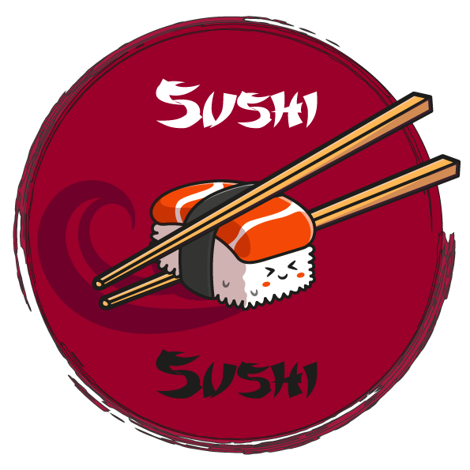

<nav class="navbar navbar-expand-xl navbar-dark bg-black">
    <div class="container-fluid">
      <a class="navbar-brand" href="#">
        
      </a>
      <button class="navbar-toggler" type="button" data-bs-toggle="collapse" data-bs-target="#navbarSupportedContent"
        aria-controls="navbarSupportedContent" aria-expanded="false" aria-label="Toggle navigation">
        <span class="navbar-toggler-icon"></span>
      </button>
    </div>
  </nav>
  
